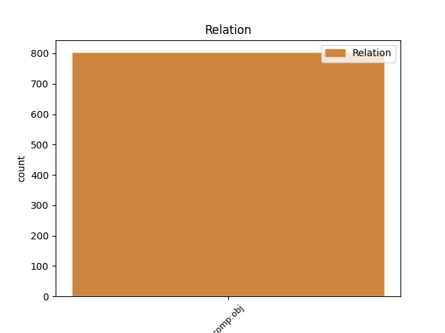

Distribution of features within this leaf

Agreement Rules sorted by frequency.
- When the dependent token is the direct object complements(comp:obj) of the head token,
1 Դատելով _ _ _ _ 0 _ _ _
2 Արմեն _ _ _ _ 0 _ _ _
3 Աշոտյանի _ _ _ _ 0 _ _ _
4 հայտարարություններից _ _ _ _ 0 _ _ _
5 ՝ _ _ _ _ 0 _ _ _
6 իրենք _ _ _ _ 0 _ _ _
7 խաղադրույք _ _ _ _ 0 _ _ _
8 են _ _ _ _ 0 _ _ _
9 անում _ _ _ _ 0 _ _ _
10 Կարապետյանի _ _ _ _ 0 _ _ _
11 վրա _ _ _ _ 0 _ _ _
12 ՝ _ _ _ _ 0 _ _ _
13 պայմանով _ _ _ _ 0 _ _ _
14 , _ _ _ _ 0 _ _ _
15 որ _ _ _ _ 0 _ _ _
16 Սերժ _ _ _ _ 0 _ _ _
17 Սարգսյանը _ _ _ _ 0 _ _ _
18 կպահպանի պահպանել VERB _ Aspect=Prosp|Mood=Cnd|Number=Sing|Person=3|Polarity=Pos|Subcat=Tran|Tense=Pres|VerbForm=Fin|Voice=Act 0 _ _ _
19 իր _ _ _ _ 0 _ _ _
20 դերը դեր NOUN _ Animacy=Nhum|Case=Nom|Definite=Def|Number=Sing 18 comp:obj _ LTranslit=der|SpaceAfter=No|Translit=derë
21 : _ _ _ _ 0 _ _ _
Disagree Examples:
1 Մտածում _ _ _ _ 0 _ _ _
2 եմ _ _ _ _ 0 _ _ _
3 ՝ _ _ _ _ 0 _ _ _
4 Ադամի _ _ _ _ 0 _ _ _
5 ու _ _ _ _ 0 _ _ _
6 Եվայի _ _ _ _ 0 _ _ _
7 վտարումը _ _ _ _ 0 _ _ _
8 Եդեմական _ _ _ _ 0 _ _ _
9 այգուց _ _ _ _ 0 _ _ _
10 ( _ _ _ _ 0 _ _ _
11 դրախտից _ _ _ _ 0 _ _ _
12 ) _ _ _ _ 0 _ _ _
13 , _ _ _ _ 0 _ _ _
14 նրանց _ _ _ _ 0 _ _ _
15 տեղափոխումն _ _ _ _ 0 _ _ _
16 այլ _ _ _ _ 0 _ _ _
17 վայր _ _ _ _ 0 _ _ _
18 , _ _ _ _ 0 _ _ _
19 ուր _ _ _ _ 0 _ _ _
20 շրջակայքն _ _ _ _ 0 _ _ _
21 այլևս _ _ _ _ 0 _ _ _
22 բարեկամական _ _ _ _ 0 _ _ _
23 չէր _ _ _ _ 0 _ _ _
24 , _ _ _ _ 0 _ _ _
25 այլ _ _ _ _ 0 _ _ _
26 խիստ _ _ _ _ 0 _ _ _
27 թշնամական _ _ _ _ 0 _ _ _
28 , _ _ _ _ 0 _ _ _
29 ուր _ _ _ _ 0 _ _ _
30 իրենց _ _ _ _ 0 _ _ _
31 հացը հաց NOUN _ Animacy=Nhum|Case=Nom|Definite=Def|Number=Sing 34 comp:obj _ LTranslit=hac’|Translit=hac’ë
32 պիտի _ _ _ _ 0 _ _ _
33 տանջանքով _ _ _ _ 0 _ _ _
34 վաստակեին վաստակել VERB _ Aspect=Prosp|Mood=Sub|Number=Plur|Person=3|Polarity=Pos|Subcat=Tran|Tense=Imp|VerbForm=Fin|Voice=Act 0 _ _ _
35 , _ _ _ _ 0 _ _ _
36 նույն _ _ _ _ 0 _ _ _
37 մոլորակի _ _ _ _ 0 _ _ _
38 սահմաններում _ _ _ _ 0 _ _ _
39 չէր _ _ _ _ 0 _ _ _
40 , _ _ _ _ 0 _ _ _
41 որ _ _ _ _ 0 _ _ _
42 կատարվեց _ _ _ _ 0 _ _ _
43 : _ _ _ _ 0 _ _ _
1 Իսկ _ _ _ _ 0 _ _ _
2 այն _ _ _ _ 0 _ _ _
3 չկա _ _ _ _ 0 _ _ _
4 , _ _ _ _ 0 _ _ _
5 Տերը _ _ _ _ 0 _ _ _
6 պայթեցրել _ _ _ _ 0 _ _ _
7 է _ _ _ _ 0 _ _ _
8 կամ _ _ _ _ 0 _ _ _
9 գուցե _ _ _ _ 0 _ _ _
10 ամայացրել _ _ _ _ 0 _ _ _
11 , _ _ _ _ 0 _ _ _
12 բնակության _ _ _ _ 0 _ _ _
13 համար _ _ _ _ 0 _ _ _
14 անպիտան _ _ _ _ 0 _ _ _
15 դարձրել _ _ _ _ 0 _ _ _
16 , _ _ _ _ 0 _ _ _
17 կամ _ _ _ _ 0 _ _ _
18 էլ _ _ _ _ 0 _ _ _
19 կա _ _ _ _ 0 _ _ _
20 ու _ _ _ _ 0 _ _ _
21 ախտահանվում _ _ _ _ 0 _ _ _
22 է _ _ _ _ 0 _ _ _
23 ՝ _ _ _ _ 0 _ _ _
24 նոր _ _ _ _ 0 _ _ _
25 բնակիչներ բնակիչ NOUN _ Animacy=Hum|Case=Nom|Definite=Ind|Number=Plur 26 comp:obj _ LTranslit=bnakič|Translit=bnakičner
26 ընդունելու ընդունել VERB _ Case=Dat|Definite=Ind|Number=Coll|Polarity=Pos|Subcat=Tran|VerbForm=Gdv|Voice=Act 0 _ _ _
27 համար _ _ _ _ 0 _ _ _
28 ։ _ _ _ _ 0 _ _ _
1 Ի _ _ _ _ 0 _ _ _
2 սկզբանե _ _ _ _ 0 _ _ _
3 մեր _ _ _ _ 0 _ _ _
4 ուշքումիտքն _ _ _ _ 0 _ _ _
5 ինքնապահպանումն _ _ _ _ 0 _ _ _
6 էր _ _ _ _ 0 _ _ _
7 , _ _ _ _ 0 _ _ _
8 ստամոքսը ստամոքս NOUN _ Animacy=Nhum|Case=Nom|Definite=Def|Number=Sing 9 comp:obj _ LTranslit=stamok’s|Translit=stamok’së
9 լցնելը լցնել VERB _ Case=Nom|Definite=Def|Number=Coll|Polarity=Pos|Subcat=Tran|VerbForm=Gdv|Voice=Act 0 _ _ _
10 , _ _ _ _ 0 _ _ _
11 էդ _ _ _ _ 0 _ _ _
12 հետո _ _ _ _ 0 _ _ _
13 , _ _ _ _ 0 _ _ _
14 երբ _ _ _ _ 0 _ _ _
15 անտառից _ _ _ _ 0 _ _ _
16 փախանք _ _ _ _ 0 _ _ _
17 , _ _ _ _ 0 _ _ _
18 քաղաքակրթություն _ _ _ _ 0 _ _ _
19 ստեղծեցինք _ _ _ _ 0 _ _ _
20 , _ _ _ _ 0 _ _ _
21 ազատ _ _ _ _ 0 _ _ _
22 ու _ _ _ _ 0 _ _ _
23 համեմատաբար _ _ _ _ 0 _ _ _
24 անվտանգ _ _ _ _ 0 _ _ _
25 ժամանակ _ _ _ _ 0 _ _ _
26 ունեցանք _ _ _ _ 0 _ _ _
27 ուրիշ _ _ _ _ 0 _ _ _
28 , _ _ _ _ 0 _ _ _
29 անտագնապ _ _ _ _ 0 _ _ _
30 աչքով _ _ _ _ 0 _ _ _
31 մեր _ _ _ _ 0 _ _ _
32 շուրջը _ _ _ _ 0 _ _ _
33 նայելու _ _ _ _ 0 _ _ _
34 : _ _ _ _ 0 _ _ _
1 Ի _ _ _ _ 0 _ _ _
2 սկզբանե _ _ _ _ 0 _ _ _
3 մեր _ _ _ _ 0 _ _ _
4 ուշքումիտքն _ _ _ _ 0 _ _ _
5 ինքնապահպանումն _ _ _ _ 0 _ _ _
6 էր _ _ _ _ 0 _ _ _
7 , _ _ _ _ 0 _ _ _
8 ստամոքսը _ _ _ _ 0 _ _ _
9 լցնելը _ _ _ _ 0 _ _ _
10 , _ _ _ _ 0 _ _ _
11 էդ _ _ _ _ 0 _ _ _
12 հետո _ _ _ _ 0 _ _ _
13 , _ _ _ _ 0 _ _ _
14 երբ _ _ _ _ 0 _ _ _
15 անտառից _ _ _ _ 0 _ _ _
16 փախանք _ _ _ _ 0 _ _ _
17 , _ _ _ _ 0 _ _ _
18 քաղաքակրթություն քաղաքակրթություն NOUN _ Animacy=Nhum|Case=Nom|Definite=Ind|Number=Sing 19 comp:obj _ LTranslit=k’aġak’akrt’owt’yown|Translit=k’aġak’akrt’owt’yown
19 ստեղծեցինք ստեղծել VERB _ Aspect=Perf|Mood=Ind|Number=Plur|Person=1|Polarity=Pos|Subcat=Tran|Tense=Past|VerbForm=Fin|Voice=Act 0 _ _ _
20 , _ _ _ _ 0 _ _ _
21 ազատ _ _ _ _ 0 _ _ _
22 ու _ _ _ _ 0 _ _ _
23 համեմատաբար _ _ _ _ 0 _ _ _
24 անվտանգ _ _ _ _ 0 _ _ _
25 ժամանակ _ _ _ _ 0 _ _ _
26 ունեցանք _ _ _ _ 0 _ _ _
27 ուրիշ _ _ _ _ 0 _ _ _
28 , _ _ _ _ 0 _ _ _
29 անտագնապ _ _ _ _ 0 _ _ _
30 աչքով _ _ _ _ 0 _ _ _
31 մեր _ _ _ _ 0 _ _ _
32 շուրջը _ _ _ _ 0 _ _ _
33 նայելու _ _ _ _ 0 _ _ _
34 : _ _ _ _ 0 _ _ _
1 Ի _ _ _ _ 0 _ _ _
2 սկզբանե _ _ _ _ 0 _ _ _
3 մեր _ _ _ _ 0 _ _ _
4 ուշքումիտքն _ _ _ _ 0 _ _ _
5 ինքնապահպանումն _ _ _ _ 0 _ _ _
6 էր _ _ _ _ 0 _ _ _
7 , _ _ _ _ 0 _ _ _
8 ստամոքսը _ _ _ _ 0 _ _ _
9 լցնելը _ _ _ _ 0 _ _ _
10 , _ _ _ _ 0 _ _ _
11 էդ _ _ _ _ 0 _ _ _
12 հետո _ _ _ _ 0 _ _ _
13 , _ _ _ _ 0 _ _ _
14 երբ _ _ _ _ 0 _ _ _
15 անտառից _ _ _ _ 0 _ _ _
16 փախանք _ _ _ _ 0 _ _ _
17 , _ _ _ _ 0 _ _ _
18 քաղաքակրթություն _ _ _ _ 0 _ _ _
19 ստեղծեցինք _ _ _ _ 0 _ _ _
20 , _ _ _ _ 0 _ _ _
21 ազատ _ _ _ _ 0 _ _ _
22 ու _ _ _ _ 0 _ _ _
23 համեմատաբար _ _ _ _ 0 _ _ _
24 անվտանգ _ _ _ _ 0 _ _ _
25 ժամանակ ժամանակ NOUN _ Animacy=Nhum|Case=Nom|Definite=Ind|Number=Sing 26 comp:obj _ LTranslit=žamanak|Translit=žamanak
26 ունեցանք ունենալ VERB _ Aspect=Perf|Mood=Ind|Number=Plur|Person=1|Polarity=Pos|Subcat=Tran|Tense=Past|VerbForm=Fin|Voice=Act 0 _ _ _
27 ուրիշ _ _ _ _ 0 _ _ _
28 , _ _ _ _ 0 _ _ _
29 անտագնապ _ _ _ _ 0 _ _ _
30 աչքով _ _ _ _ 0 _ _ _
31 մեր _ _ _ _ 0 _ _ _
32 շուրջը _ _ _ _ 0 _ _ _
33 նայելու _ _ _ _ 0 _ _ _
34 : _ _ _ _ 0 _ _ _